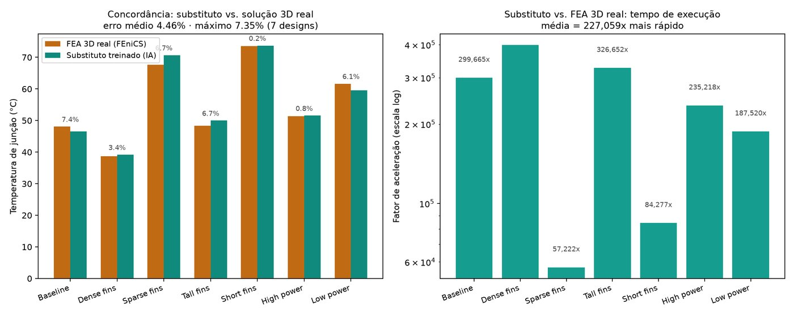

Casos de sucesso · Caso · eletrônica de potência
Substituto treinado responde 227 mil vezes mais rápido que a simulação 3D
Sete dissipadores reais, cada previsão conferida contra uma simulação de elementos finitos de verdade — nunca contra outro modelo de IA.
Validado
Objetivo
Otimizar a geometria de um dissipador exige rodar dezenas de simulações térmicas 3D, cada uma levando segundos. Isso inviabiliza uma varredura de design interativa ou um otimizador que precise avaliar centenas de candidatos. Um substituto que responda em microssegundos resolve o custo — desde que cada previsão dele seja conferida contra uma simulação de verdade, e não contra o próprio modelo que o treinou.
Principais resultados
- Em sete geometrias significativamente diferentes — aletas densas, esparsas, altas, curtas, com potência alta e baixa — o substituto respondeu em microssegundos onde a simulação real levou de 0,6 a 5,9 segundos.
- O erro de temperatura ficou dentro de 10% em todos os casos: média de 4,46%, pior caso de 7,35%.
- O erro é reprodutível. Três rodadas em dias diferentes deram exatamente o mesmo erro de temperatura; só o fator de aceleração muda, porque ele depende da carga da máquina no momento do teste.
Sete geometrias, sete simulações 3D de verdade
O conjunto de teste foi desenhado para conter mudanças que quebram substitutos treinados em variações pequenas: densidade de aletas, altura, espessura de base e nível de potência mudam ao mesmo tempo entre os sete designs.
Cada ponto da figura abaixo é uma previsão do substituto medida contra uma solução de elementos finitos resolvida na hora — não contra um resultado guardado de treino.

Por que a referência é a FEA, não o próprio modelo
Um substituto validado contra o conjunto de validação do seu próprio treino mede apenas o quanto ele é consistente consigo mesmo. É por isso que os erros de 0,01% que aparecem em muitos relatórios de surrogate não sobrevivem à primeira geometria nova.
Aqui a referência é externa e independente: um solver de elementos finitos, com malha gerada por gmsh, resolvido para cada um dos sete designs no momento do teste.
O que o fator de aceleração mede — e o que ele não mede
Aceleração é uma razão entre dois tempos de relógio, e o tempo da simulação de referência depende da máquina. Por isso o fator varia entre 57 mil× e 399 mil× entre designs e entre execuções, enquanto o erro de temperatura é idêntico nas três rodadas.
A leitura correta é: a previsão é determinística, o custo de referência não é.
“A previsão de temperatura é determinística — o mesmo erro nas três rodadas. Só o fator de aceleração muda com a carga da máquina no momento do teste.”
Traga o seu caso
Tem uma simulação lenta, cara ou difícil de verificar?
Mande o caso. Respondemos com um escopo fechado e uma métrica de sucesso mensurável, ou dizemos que o método clássico resolve melhor.